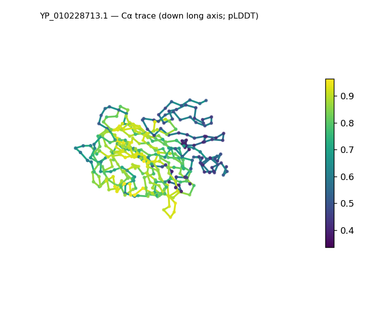
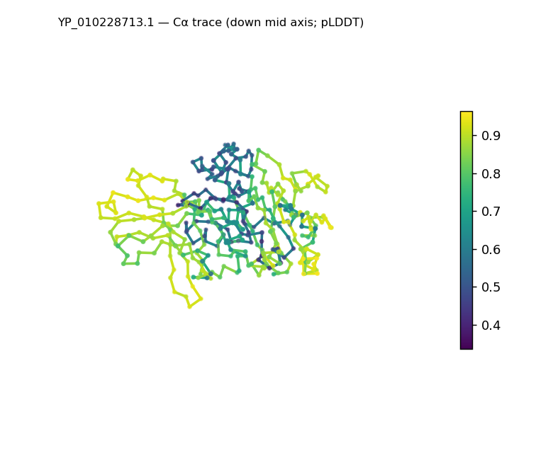
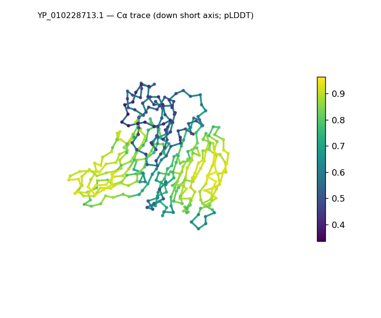
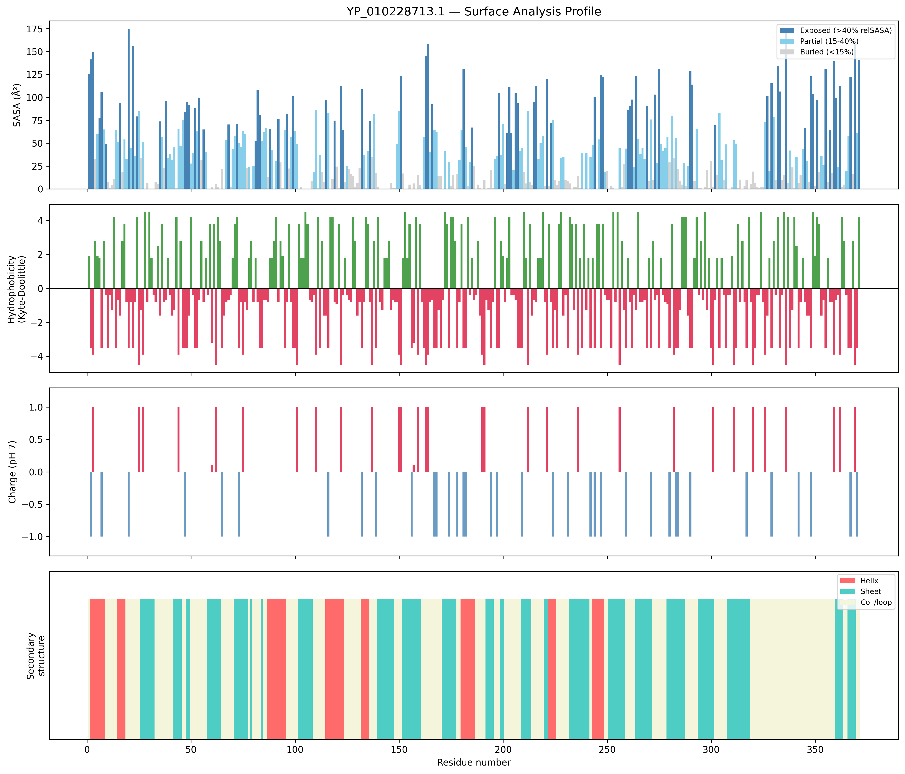
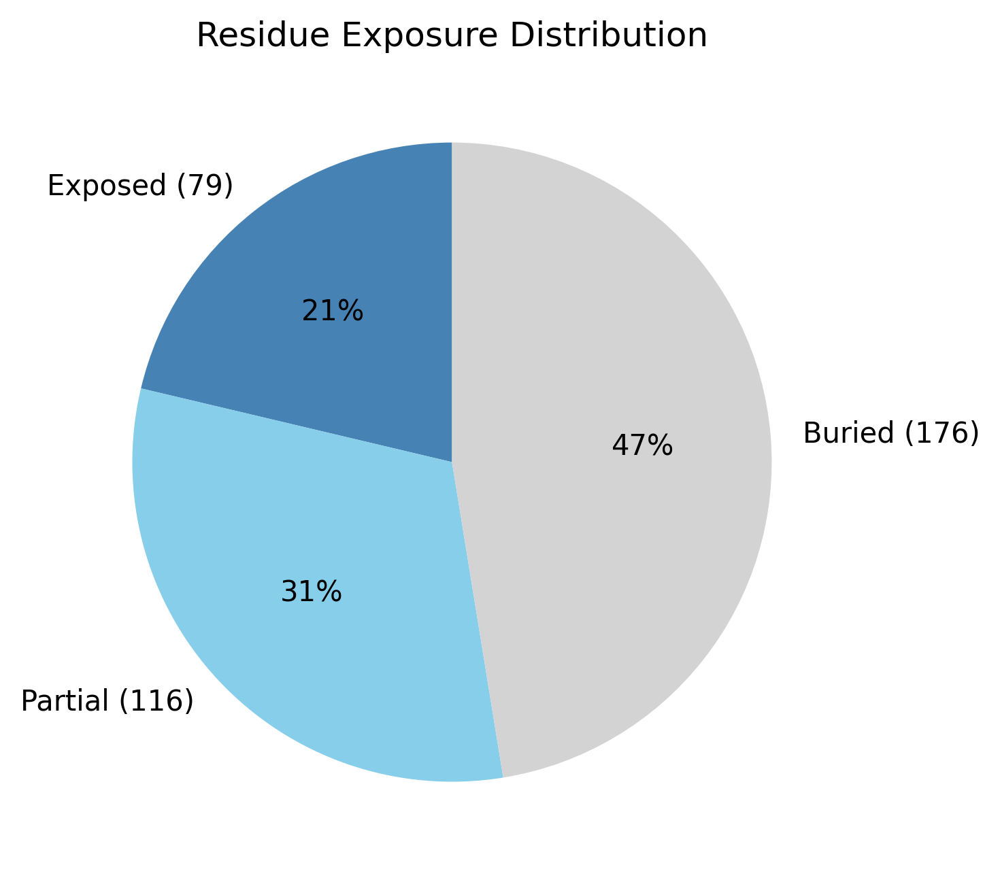

Structural analysis — YP_010228713.1
Facts are emitted deterministically from the measurement scripts. Sections marked with a SYNTHESIS comment are authored by the Claude session (judgment, Zone 2), kept visibly separate from the measured facts.
Executive summary
A single-chain, 371-residue predicted model that is compact and sheet-dominated: real DSSP secondary structure is 36.4% sheet versus only 13.5% helix (50.1% coil), and the domain is tightly packed (Rg 19.7 Å, below the ~26.6 Å expected; asphericity 0.06, roughly spherical; 47.4% buried — the strongest core of the set). The sheet-over-helix content places it in the α+β class, and the classifier appropriately returns only a low-confidence generic α+β call rather than a named fold. Confidence is the lowest of the three (mean pLDDT 72.1, median 79.0, std 19.2, min 33.6), with uncertainty concentrated in a subset of regions. The solvent-exposed surface is slightly acidic (net −2 e; 10 positive vs 12 negative surface residues).
User-provided context
None provided. All observations below are derived from the structure alone.
Structure overview
- Source: predicted model — pLDDT in the B-factor column
- Chains: 1 (single chain)
- Residues / atoms: 371 / 2825
- Missing residues: 0
- Non-solvent ligands: none
- chain A: 371 res
Structural views



Cα backbone trace (Agent 2.2 matplotlib placeholder), down the long / mid / short principal axes; coloured by pLDDT. A worm trace, not a Mol* cartoon — true cartoons pending Agent 2.1 (#18).
Fold & shape
- Shape: roughly globular (asphericity 0.06, Rg 19.71 Å)
- Approx. dimensions: 57.3 × 52.5 × 41.3 Å
- Secondary structure: helix 13.5%, sheet 36.4%, coil 50.1%
- Fold class: alpha+beta
- generic alpha+beta fold (SCOP unclassified, CATH unclassified; confidence low)
Surface properties
- Exposure: buried 47.4%, partial 31.3%, exposed 21.3%
- Total SASA: 15005.9 Ų
- Surface hydrophobicity (KD): mean -1.38 ± 2.57
- Surface charge (pH 7): net -2 e (10 +, 12 −)
- Hydrophobic patches: 2:
- residues 70–72 (len 3, mean KD 3.27)
- residues 217–219 (len 3, mean KD 2.7)


Prediction quality / structural coherence
Confidence is reported, never gated — these signals are inputs for the synthesis below, not a pass/fail.
- pLDDT (chain A): mean 72.11, median 78.99, range 33.56–96.37, std 19.17
- Compactness: Rg 19.71 Å vs ~26.6 Å expected for 371 residues (2.5·N^0.4) — consistent
- Core present: buried fraction 47.4%
- Coil fraction: 50.1%
- Top fold-candidate confidence: low
Coherence assessment
The coherence signals indicate a folded model despite the lowest confidence in the set. A packed core is present (47.4% buried — the highest of the three) and the structure is compact (Rg 19.7 Å, asphericity 0.06), with ~50% of residues in defined SS (predominantly sheet) — so the 50.1% coil reflects the loop/turn-rich character of a β-dominated fold, not disorder. The pLDDT is moderate and notably uneven (mean 72.1, range 33.6–96.4, std 19.2): a well-determined β core with several lower-confidence segments. The classifier's cautious generic-α+β (low) call is consistent with this evidence — sheet-rich content without a confidently identifiable named topology. This is the low-homology pattern where a coherent fold can sit alongside a lower mean confidence.
Expected-parameter comparison
No expected-parameter profile supplied — this is the default for novel / low-homology targets. See the independent observations below.
Independent observations
- Compact, sheet-dominant fold. 36.4% sheet vs 13.5% helix with a packed core (47.4% buried) and Rg 19.7 Å (below the ~26.6 Å expectation) — a tightly packed β-rich domain, the most compact of the three.
- Loop-rich but not disordered. 50.1% coil is high, but the strong buried core and substantial sheet content distinguish this from a disordered chain — the coil is the turn/loop content typical of β-rich folds, not absence of structure.
- Lowest and most variable confidence (pLDDT mean 72.1, std 19.2, min 33.6) — and appropriately the fold classifier withholds a named fold (generic α+β, low). The reliable statement is the α+β class and the sheet-rich character, not a specific topology.
- Slightly acidic surface (net −2 e; 10 positive vs 12 negative), with two short hydrophobic patches (residues 70–72, 217–219).
What cannot be determined from structure alone
- Identity and function — not established; the analysis is identity-agnostic.
- Specific fold / topology — only a generic α+β class is assigned (low confidence); identifying a β-rich fold needs structural comparison — Agent 3 (Foldseek).
- Mechanism / binding — no ligands; nothing assessed.
- Homology / relatives — Agent 3. Seeds: a compact, sheet-dominant (~36% sheet, 14% helix) ~371-residue α+β domain with a packed core and locally lower confidence (min pLDDT 33.6); the β-rich signature is the match target.
Methods
- Measurements (deterministic):
parse_structure.py (metadata, confidence stats), surface_analysis.py (Shrake–Rupley SASA, Kyte–Doolittle hydrophobicity, charge at pH 7, DSSP secondary structure, shape metrics, SCOP/CATH fold class), render_views.py (Mol* cartoon renders).
- Report facts below the synthesis sections are emitted verbatim from the above scripts' JSON by
assemble_report.py — no transcription.
- Synthesis sections (executive summary, independent observations, coherence assessment, cannot-determine) are authored by Claude per
SKILL.md Step 9, each claim cited to a measurement.